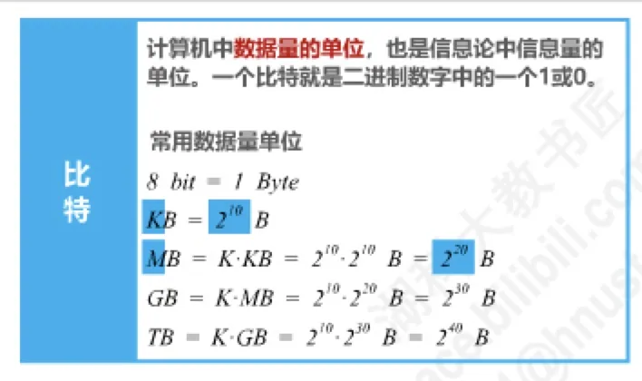
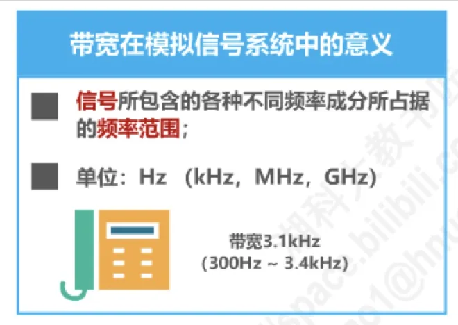
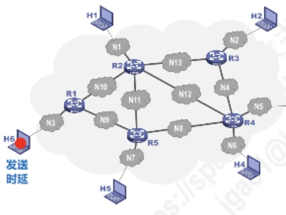

计算机通信与网络 · 第 1 章 概述
1.5 计算机网络的性能指标（1）
前面几节讲的是「网络是什么、怎么交换」。但要真正评价一个网络好不好，还需要一把尺子 —— 这就是性能指标。本节先列出最常用的八个性能指标，再逐个讲清其中的速率、带宽、吞吐量和时延；时延带宽积、往返时间、利用率和丢包率留到下一节。
1. 常用的八个性能指标
计算机网络的性能可以从不同方面来度量。教材给出了最常用的八个指标：
- 速率；
- 带宽；
- 吞吐量；
- 时延；
- 时延带宽积；
- 往返时间；
- 利用率；
- 丢包率。
这八个指标不是孤立的，它们回答的问题各不相同：速率和带宽说的是「理论上能有多快」，吞吐量说的是「实际上有多快」，时延和往返时间说的是「要等多久」，利用率和丢包率则刻画网络「忙不忙、稳不稳」。本节先讲前四个。
2. 速率
要讲速率，得先从最小的单位说起。比特（bit）是计算机中数据量的单位，也是信息论中信息量的单位：一个比特就是二进制数字中的一个 1 或 0。常用的数据量单位是：
- 8 bit = 1 Byte（字节）；
- 1 KB = 210 B；
- 1 MB = K · KB = 210 · 210 B = 220 B；
- 1 GB = K · MB = 210 · 220 B = 230 B；
- 1 TB = K · GB = 210 · 230 B = 240 B。
数据量单位有一个容易踩的坑：这里的 K、M、G、T 都是 2 的整数次幂（1024 进制），而硬盘等存储设备的厂商习惯按 1000 进制标注容量。所以一块标称 250 GB 的固态硬盘，在操作系统里看到的容量是 250 × 109 / 230 ≈ 232.8 GB —— 差的不是硬盘缩水，而是两种进制。
有了数据量，就可以定义速率（Rate）了：它指连接在计算机网络上的主机在数字信道上传送比特的速率，也称为比特率或数据率。常用的数据率单位是：
- bit/s（b/s、bps）；
- 1 kb/s = 103 bit/s；
- 1 Mb/s = k · kb/s = 103 · 103 bit/s = 106 bit/s；
- 1 Gb/s = k · Mb/s = 109 bit/s；
- 1 Tb/s = k · Gb/s = 1012 bit/s。
请注意对比：数据量单位是 1024 进制，数据率单位却是 1000 进制（k = 103）。一个说 Byte，一个说 bit，一个按 1024，一个按 1000 —— 换算时稍不留神就会算错一个数量级。

3. 带宽
带宽（Bandwidth）这个词在两个领域里含义不同，必须分清：
- 在模拟信号系统中，带宽指信号所包含的各种不同频率成分所占据的频率范围，单位是 Hz（kHz、MHz、GHz）。例如一路电话信号的带宽是 3.1 kHz，即 300 Hz ~ 3.4 kHz；
- 在计算机网络中，带宽用来表示网络的通信线路所能传送数据的能力，因此网络带宽表示在单位时间内从网络中的某一点到另一点所能通过的最高数据率，单位是 bit/s（kb/s、Mb/s、Gb/s、Tb/s），与速率的单位相同。
两种表述之间并非毫不相干：一条通信线路的「频带宽度」越宽，它所传输数据的「最高数据率」也就越高 —— 这一点在 2.5 节讲信道的极限容量时会从公式上得到印证。

4. 吞吐量
吞吐量（Throughput）表示在单位时间内通过某个网络（或信道、接口）的数据量。它经常被用来对现实世界中的网络进行测量，以便知道实际上到底有多少数据量能够通过网络。
吞吐量与带宽的关系是：吞吐量受网络的带宽或额定速率的限制。带宽是「上限」，吞吐量是「实测值」。比如一台带宽 1 Gb/s 的以太网交换机，在真实流量下能达到的吞吐量往往只有几百 Mb/s，因为它还要受线路质量、CPU 处理能力、其他流量竞争等因素的影响。
5. 时延
时延（Delay）指数据（一个报文或一个分组）从网络的一端传送到另一端所需的时间。它不是一个单一的量，而是由几部分叠加而成的。

（1）发送时延
发送时延（又称传输时延）是主机或路由器把分组的所有比特发送到链路上所需要的时间，它取决于分组有多长、网卡发得有多快：
发送时延 = 分组长度（bit） ÷ 发送速率（bit/s）
注意分母是发送速率，即网卡把比特推向链路的速率，而不是信号在线路上跑的速度。
（2）传播时延
传播时延是电磁波在信道中传播一定距离所需要的时间：
传播时延 = 信道长度（m） ÷ 电磁波在信道上的传播速率（m/s）
电磁波的传播速率取决于介质：自由空间约 3 × 108 m/s，铜线约 2.3 × 108 m/s，光纤约 2.0 × 108 m/s。请注意区分「发送」和「传播」：前者是比特离开网卡的速度，由设备决定；后者是比特在介质中前进的速度，由介质和距离决定，与带宽无关。
（3）处理时延与排队时延
处理时延是主机或路由器收到分组后，对分组首部进行分析、查表、检错等所花费的时间。它取决于设备的处理能力和协议的开销，一般不便直接计算。
此外，分组在结点的缓存队列中等待转发还会产生排队时延。它与当时的通信量密切相关：网络空闲时几乎为零，网络繁忙时可能急剧增大，因此也通常通过测量而非计算得到。
于是有：总时延 = 发送时延 + 传播时延 + 处理时延 + 排队时延。在具体问题中如果某几项相对很小（比如忽略处理时延和排队时延），就可以只算剩下的一两项。
（4）几个典型计算的辨析
原讲义用几个计算把这几个时延区分开来，结论很值得记住。
其一：单位换算不能想当然。有一个待发送的数据块大小为 100 MB，网卡的发送速率为 100 Mb/s，则发送完该数据块所需的时间是 100 MB ÷ 100 Mb/s。严格来说 MB 与 Mb 不能直接约掉，要先把 100 MB 化为 100 × 220 × 8 bit，于是时间为 100 × 220 × 8 ÷ 108 = 8.388608 s；平时估算时把 M 直接约掉、只看 8 倍的 Byte/bit 关系，得到 8 s，量级上是对的。
其二：数据块大时，发送时延占绝对主导。数据块长度 100 MB、信道带宽 1 Mb/s、传送距离 1000 km 时：发送时延 = 100 × 220 × 8 ÷ 106 ≈ 838.86 s，而传播时延 = 1000 × 103 ÷ (2 × 108) = 0.005 s。发送时延比传播时延大了五个数量级。
其三：数据块极小时，传播时延反而不可忽略。若把数据块换成一个 1 B 的数据，其余条件不变：发送时延 = 1 × 8 ÷ 106 = 8 × 10-6 s，而传播时延仍是 0.005 s —— 传播时延反过来成了主导项。
这三个计算说明的是同一件事：发送时延与数据量成正比，传播时延只与距离和介质有关，因此「哪个时延更大」完全取决于具体场景，不能一概而论。
其四：交换方式不同，总时延也不同。原讲义还比较过这样一个场景：主机甲通过 1 个路由器（存储转发方式）与主机乙互联，两段链路的数据传输速率均为 10 Mb/s，要发送一个 8 Mb 的报文，分组大小为 10 kb，忽略链路传播时延、分组头开销和分组拆装时间。若采用报文交换，整个报文必须在路由器完整收到后才能开始转发，共需 0.8 s × 2 = 1.6 s，即 1600 ms；若采用分组交换，报文被切成 800 个分组，每个分组的发送时间为 1 ms，由于各分组可以流水线式地连续转发，总时间约为 (800 + 1) × 1 ms = 801 ms。这正是 1.3 节所说的「分组交换加速传输」在时延上的体现。
本节小结
- 常用的八个性能指标是速率、带宽、吞吐量、时延、时延带宽积、往返时间、利用率、丢包率；本节讲前四个；
- 速率（比特率、数据率）指主机在数字信道上传送比特的速率，基本单位 bit/s；数据量单位按 1024 进（8 bit = 1 Byte，1 KB = 210 B ……），数据率单位按 1000 进（1 kb/s = 103 bit/s）；
- 带宽在模拟信号系统中指频率范围（Hz），在计算机网络中指线路所能通过的最高数据率（bit/s），两者密切相关；
- 吞吐量指单位时间内实际通过某个网络、信道或接口的数据量，它受带宽或额定速率限制，是「实测」而非「理论」；
- 时延 = 发送时延（分组长度 ÷ 发送速率）＋ 传播时延（信道长度 ÷ 电磁波传播速率）＋ 处理时延 ＋ 排队时延；发送时延与数据量成正比，传播时延只与距离和介质有关；
- 其余四个指标（时延带宽积、往返时间 RTT、利用率、丢包率）见下一节。